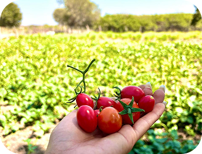
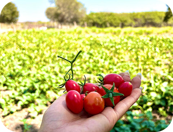
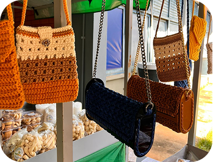
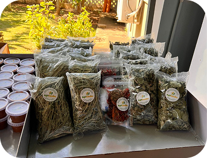
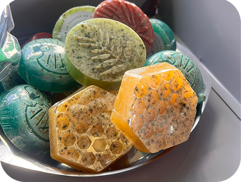
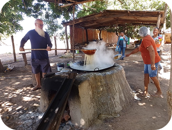

Quem somos?
 



A AgriFamília é um projeto que conecta tradição, sustentabilidade e inovação, promovendo os ricos frutos da agricultura familiar. Somos apaixonados por oferecer uma ampla variedade de produtos naturais e artesanais, feitos com cuidado e respeito à natureza.




Valorizamos cada produtor e cada processo, garantindo qualidade e autenticidade em tudo o que entregamos. Acreditamos no poder da comunidade para transformar vidas e construir um futuro mais sustentável e saudável.